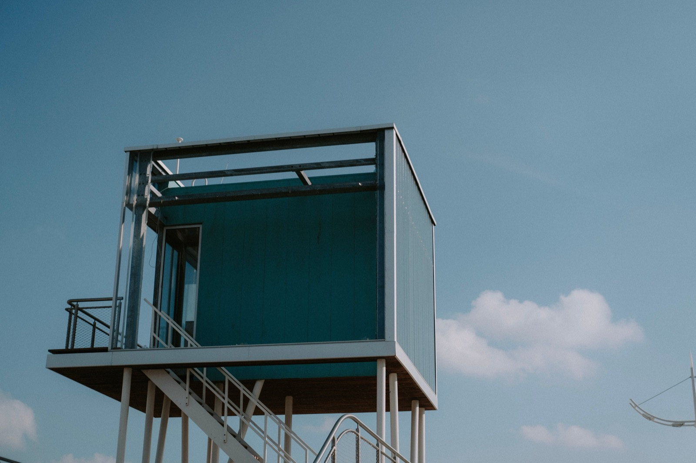

Prefab & Modular Homes
Factory-built homes assembled on site — faster and more consistent than stick-building. What they really cost, the trade-offs, and whether they work in the tropics.

Prefab and modular homes are built as finished sections in a factory, then transported and assembled on site. The result: a build that's often 30–50% faster than site-construction, with tighter quality control — because the work happens indoors, on jigs, rain or shine.
How they're built
"Prefab" is an umbrella term; "modular" is the most complete form — whole 3D room-modules (kitchen, bath, bedroom) are finished in a factory, shipped, and stacked/joined on a prepared foundation. Panelized prefab ships flat walls/roof panels for faster on-site framing. Because factory conditions are controlled, quality and waste beat typical site-builds.
What does it cost?
Roughly $1,000–2,500/m² ($100–230/sqft) finished, depending on spec — often modestly cheaper than equivalent site-built, with the real savings in time (months faster). In the tropics, factor shipping/craning of modules to your lot, which can erode the savings on remote sites. (Ranges are approximate and vary widely by finish and region.)
The trade-offs at a glance
| Factor | Rating | Notes |
|---|---|---|
| Cost | 🟡 | Comparable to site-built; saves time not always money |
| Build speed | 🟢 | Weeks not months |
| Quality control | 🟢 | Factory-built, low waste |
| DIY-friendly | 🔴 | Needs a factory + crane |
| Heat/climate fit | 🟡 | Depends on the module spec/insulation |
| Moisture/termite | 🟢 | If concrete/steel modules; wood needs care |
| Seismic/wind | 🟢 | Engineered connections |
| Permitting/finance | 🟢 | Well understood by codes/banks |
Can you build this in Panama or Costa Rica?
Yes — modular is a strong tropical option for its speed and consistency, and several regional builders offer concrete or steel modular systems that handle humidity and termites well. The main friction is logistics: getting large modules up a mountain road to a Boquete or highland lot. On accessible sites it shines. SORA's fixed-price, factory-precision ethos is philosophically close to modular already.
Thinking about building in Panama or Costa Rica?
SORA is a fixed-price design-build platform for foreign buyers. We build in reinforced concrete by default — and we can talk you through when an alternative method actually makes sense for the tropics. Play with cost live in the 3D configurator.
See real 2026 build costs →Frequently asked questions
Are prefab and modular homes cheaper?
Modestly, sometimes — the bigger, more reliable saving is speed (often months faster). Material and labor savings from factory efficiency can be offset by shipping and craning modules to the site, especially on remote or mountainous lots.
Do modular homes hold up in hurricanes and earthquakes?
Engineered modular homes with proper connections perform well; concrete and steel modules especially. The module-to-module and module-to-foundation connections are the critical detail.
Is a prefab home easy to finance and insure?
Generally yes — far easier than earthen or experimental methods. Codes and banks understand modular construction, so permitting, mortgaging, and insurance are usually straightforward.
Sources & verification
Figures in this guide were checked against primary and authoritative sources on 27 July 2026. Immigration, tax, and cost figures change — always confirm the current rules with the official body or a licensed professional before acting.
- MN Property Group — rise of off-site/modular construction
- Infurnia — green construction materials